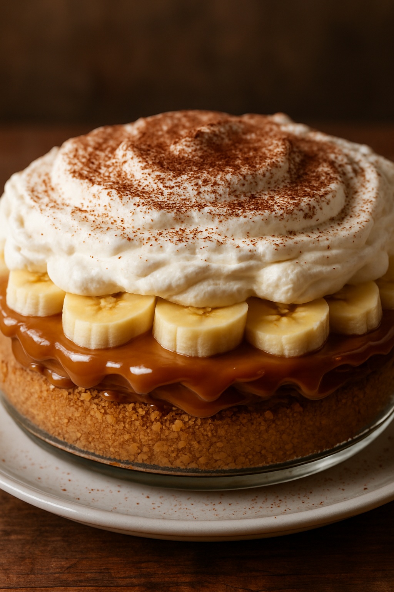

- 1 pacote de bolacha maisena
- 100g de manteiga derretida
- 1 lata de doce de leite
- 3 bananas maduras
- Chantilly
- Canela em pó (opcional)
- Corte as bananas em rodelas
- Triture a bolacha e misture com a manteiga até formar uma farofa úmida
- Forre o fundo de uma forma
- Cubra com o doce de leite e as bananas em rodelas
- Finalize com chantilly e canela
- Leve à geladeira por 2 horas
- Sirva gelado